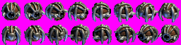

Your own 2D Game Engine 2.0
Computer Graphics Project

1 Project
Using the SDL3 library for creating an OpenGL context and GLSL for creating vertex and fragment shaders, you should implement the rendering pipeline of the Game Engine created in Topics of Advanced Game Programming class.
Students that are not attending this class do not need to implement the game engine. Instead, just the rendering of the described game entities (spaceship, enemies, powerups, companion, etc.).
2 Game: Xenon 2000
For testing your Game Engine and its rendering pipeline, you must use the assets of the Xenon 2000: Project PCF and create a very simple horizontal scroller clone of the Xenon 2000 game. Therefore, you will need to load the assets corresponding to the spaceship, missile and enemy’s sprite sheets, backgrounds, etc.
2.1 Spaceship
When the ship is moving to the left, it must have the animation of turning to the left (see the first three tiles of Figure 1) and when is turning right, an animation of turning right (last three tiles of Figure 1).
2.2 Missiles
There are three types of missiles: light, medium and heavy, each has a corresponding row on the “missile.bmp” sprite sheet:

Every time a missile collides with an enemy, the missile is destroyed and should happen an explosion. You must use the following sprite sheet for the explosion:
2.3 Loner
The Loner is an enemy and is represented by the following sprite sheet:
2.4 Enemy Projectiles
The enemy projectiles are fired by Loners and represented by the following sprite sheet:

Enemy projectiles also explode when they collide with the Spaceship.
2.5 Rusher
The rusher is also an enemy and is represented by the following sprite sheet:
2.6 Drone
The drone is also an enemy and is represent by the following sprite sheet:

2.7 Stone asteroids
Stone asteroids are hazards represented by three different sprite sheets, according to their size:
When a big or medium size asteroid receives enough damage, it is split into three smaller asteroids (see reference). When the smaller asteroid is hit, it explodes.
2.8 Metal Asteroids
Metal asteroids are hazards that are indestructible and are represented by three different sprite sheets, according to their size:
2.9 Companion
The Spaceship can have up to two companions, which are represented by the following Sprite Sheet:
2.10 Shield Power Up
The shield power up is represented by the following sprite sheet:
The shield power up restores the energy (life) of the Spaceship or the Companion, depending on who “catches” the power up.
2.11 Weapon Power Up
The weapon power up is represented by the following sprite sheet:
The weapon powerup upgrades the fire power (missile type) of the Spaceship or the Companion, depending on who captured this power up.
2.12 Horizontal Scroller
The game should be a horizontal scroller version of the reference game and have at least two background layers to achieve some sort of parallax effect.
2.13 Text Rendering
OpenGL does not support text out of the box. One possible solution is to use tile maps for text rendering. You should use the following sprite sheets for text rendering:
2.14 UI
The UI of the game should be as close as possible to the reference. Examples:
- The number of remaining lives should be represented by the spaceships on the bottom left of the screen
- The current life of the Spaceship should be represented by a health bar on the bottom left
- The health bar should change color:
- Red for low life
- Yellow for medium life
- Green for above medium life
- The current player score should be presented on the top left
- The high score on the top center

3 Game Engine (only for students attending ATGP)
The implemented Game Engine must follow the Object-Oriented paradigm. Furthermore, it should be as generic as possible, so it can be used for creating other kinds of 2D games. Thus, the Game Engine and the Xennon clone game should be created in separate XCode/Visual Studio Projects. The project corresponding to the Xennon clone game should include the game engine has an external library.
Also, resource management must be considered: every time an allocated resource is not required, it should be freed. You must avoid resource/memory leaks at all costs.
For the Game Loop inside your game engine, you must separate the game logic from the rendering (the rendering part will be evaluated in Computer Graphics class). During each loop, first all the actors or game objects have their game logic updated (positions, etc.), and then all actors are rendered.
For more information, please go to: Unity Execution Order Documentation. Here, you have a short description of how the Unity1 Game Engine works.
4 Reference
You can use the following video as a reference for your implementation of the Xennon 2000 clone:
5 Report
Together with the project, there must be a report in PDF format with a description of the Game Engine, including:
- A class diagram of the Game Engine
- The description of all the implemented algorithms
- A justification of the choices made
- All references (books, websites, etc.) in which the algorithms were based
- Explicitly include the objectives achieved and not achieved
6 Marks
This part of the project has the following marks:
| Criteria | Mark |
|---|---|
| Transformations | 15% |
| Animations | 15% |
| Horizontal scrolling | 15% |
| Text Rendering | 15% |
| UI | 15% |
| Resource Management | 15% |
| Report | 10% |
7 Rules
The practical project must follow the following rules:
- Deadline for submission: 27th January, 2026
- The work can be performed by groups of two students (projects with groups larger than two will not be accepted)
- On 27th January, the project will be presented on an oral defense
- The project should be submitted to github and shared with the professor as project collaborator